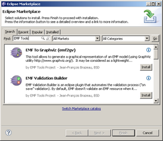
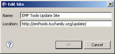
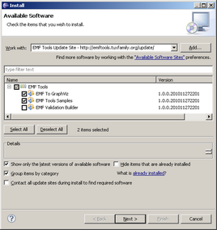
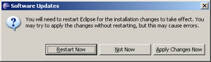
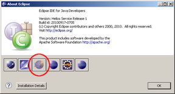
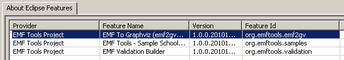

Installation
Pre-requesites
Emf2gv needs :
- Graphviz 2.28+ : Graphviz is open source graph visualization software available on most platforms (windows, linux, ...), see http://www.graphviz.org for more information
- Eclipse 3.6+
- EMF Eclipse Modeling Framework SDK 2.6.1+
- EMF Validation Framework SDK 1.4.0+
Helios Eclipse Modeling Tools package perfectly suits these needs (except for Graphviz).
Installation Procedures Overview
There are two solutions to install Emf2gv :
- via Eclipse Market Place : the easiest (and preferred) way
- via the EMF Tools Update Site
Important note : the Update Site method is the only one available to install the School sample that is referenced in the documentation.
Eclipse Market Place Procedure
- Select the Help > Eclipse marketplace... menu
- Type
EMF Tools in the Find field
- After a few seconds EMF To Graphviz is supposed to appear
- Click on the Install button of emf2gv and follow the wizard until the end

(Click to enlarge)
Update Site Procedure
- Select the Windows > Preferences menu
- In the preferences page, select Install/Update > Available Software Sites on the left
- Cick Add
- Enter the EMF Tools Update Site URL (
http://emftools.tuxfamily.org/update/) and click OK

(Click to enlarge)
- Select the Help > Install New Software... menu
- Select the EMF Tools Update Site
- In the EMF Tools category, select the EMF To GraphViz feature and click Next (you may also select the EMF Tools Samples if you want to be able to reproduce the examples shown in emf2gv documentation)

(Click to enlarge)
- Click Next in the Install Details page
- If you accept the licence agreement, click Finish
- You are warned that the software contains unsigned content, click OK
- After a few seconds, a dialog appears giving to you the possibility to restart eclipse, click Restart Now

(Click to enlarge)
Installation Check
- After having restarted eclipse, select the Help > About Eclipse menu
- You should see the EMF Tools Project icon

(Click to enlarge)
If you click on this icon, a new dialog gets opened in which you may see EMF To Graphviz, Sample School Model (optionnaly) and EMF Validation Builder listed :

(Click to enlarge)